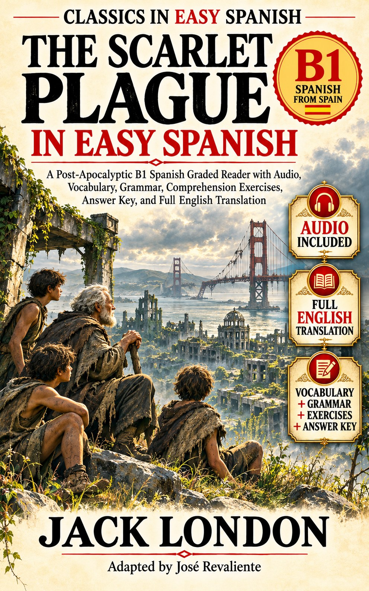

CHAPTER I · 13:27
El mundo después de la peste
This recording could not load. Try Open MP3 below or the complete Internet Archive collection.
Open MP3 · Use your browser’s save option to keep a copy.
Read Jack London’s post-apocalyptic classic in supported Spanish. Listen to all six chapters and practise the vocabulary from the book.
Original story by Jack London
Adapted by José Revaliente
Use this companion alongside the six-chapter Easy Spanish retelling. Audio and glossary entries belong to this adaptation.
About 2 hours 8 minutes in total. Recordings are hosted on Internet Archive.
This recording could not load. Try Open MP3 below or the complete Internet Archive collection.
Open MP3 · Use your browser’s save option to keep a copy.This recording could not load. Try Open MP3 below or the complete Internet Archive collection.
Open MP3 · Use your browser’s save option to keep a copy.This recording could not load. Try Open MP3 below or the complete Internet Archive collection.
Open MP3 · Use your browser’s save option to keep a copy.This recording could not load. Try Open MP3 below or the complete Internet Archive collection.
Open MP3 · Use your browser’s save option to keep a copy.This recording could not load. Try Open MP3 below or the complete Internet Archive collection.
Open MP3 · Use your browser’s save option to keep a copy.This recording could not load. Try Open MP3 below or the complete Internet Archive collection.
Open MP3 · Use your browser’s save option to keep a copy.Open the complete audio collection on Internet Archive →
A recording could not load. Try its Open MP3 link or the Internet Archive collection above.
American English meanings follow the book’s contextual glossary. Some meanings reveal story details; filter by the chapter you have finished.
53 of 53 entries
isolation — separating people to limit contact; in the story, sick people are kept apart from the group.
Chapter IV audioalphabet — the ordered set of letters used by a language.
Chapter VI audiobacteriologist — a specialist who studies bacteria. Granser uses the term when recalling the researchers of his former world.
Chapter II audiobarge — a broad boat used to carry people, animals or cargo.
Chapter VI audioshell; carapace — the hard covering that protects an animal such as a crab.
Chapter I audiochauffeur; driver — someone whose job is driving vehicles. This was Bill's work before the plague; Chauffeur becomes his name.
Chapter I audiocontagion; transmission of infection — the passing of an infectious disease. The refugees fear that someone may already be infected.
Chapter IV audioconvulsion — a strong, involuntary muscular movement. Narrative form: «convulsiones».
Chapter III audioskull — the bony structure of the head. The boys find skulls among the human remains.
Chapter I audioto decompose — here used as «descomponerse», to decay or rot; the bodies begin to decay soon after death.
Chapter III audioairship — a balloon-like aircraft that can be steered.
Chapter III audioillness; disease — a condition that affects health. The Scarlet Plague is the fictional disease in this story.
Chapter II audioepidemic — the spread of a disease affecting many people in a region during a particular period.
Chapter II audioscarlet — a vivid, intense red. It names the color associated with the fictional plague.
Chapter I audioforge — a hearth or workshop where metal is heated so that it can be shaped.
Chapter VI audiogerm — a microorganism, especially one that can cause disease. Narrative form: «gérmenes».
Chapter II audiocampfire; bonfire — a fire built outdoors. The boys eat beside one on the beach.
Chapter I audiosling — a flexible strap used to throw stones.
Chapter I audiofootprint; track — a mark left by a person or animal passing through. Granser follows tracks to find other survivors.
Chapter VI audiofire; conflagration — a destructive fire spreading through a place. Fires consume the cities during the disaster.
Chapter III audioincubation period — the time between infection and the appearance of the first symptoms. In this fictional outbreak, symptoms can be delayed.
Chapter IV audioimmune — protected against a particular disease despite exposure. Granser does not become sick with the plague.
Chapter IV audiotycoon — a person with great power and influence, especially through wealth. In this story the magnates also hold political power.
Chapter II audiopack; herd — a group of animals of the same species. Use pack for dogs or wolves and herd for horses in these contexts.
Chapter V audiothicket; scrub — land covered with dense shrubs and other low plants.
Chapter V audiomussel — an edible marine animal with two dark shells. The boys cook mussels on the beach.
Chapter I audiomessage — information communicated from one person to another. News of the plague arrives through messages.
Chapter III audiomicroorganism — a living thing generally too small to see without instruments. Not all microorganisms cause disease.
Chapter II audiomicroscope — an instrument for seeing things too small to distinguish with the naked eye.
Chapter II audiomoccasin — a soft leather shoe without a raised heel. Bill uses an order about his moccasins to humiliate Vesta.
Chapter V audiocoin — a piece of money, usually metal. Edwin's coin preserves a date that Granser can read.
Chapter I audiorust — the coating produced as iron oxidizes. The old rails are rust-covered.
Chapter I audiopalace; grand residence — a large, luxurious building. Vesta takes refuge on a wealthy family's property.
Chapter V audiogunpowder — a substance that burns very rapidly and has been used to propel projectiles.
Chapter VI audiowell — a deep hole dug in the ground to reach or draw water.
Chapter IV audioprovisions; supply — food or other supplies stored for later use. The narrative usually uses the plural «provisiones».
Chapter V audioration — a measured share of food assigned to a person or family.
Chapter IV audiorail — a metal track on a railroad. Trees have displaced the old rails. The story uses the singular «raíl»; its plural is «raíles».
Chapter I audioshelter; refuge — a place where a person or group seeks protection. The Chemistry Building serves as a refuge.
Chapter IV audiowealth — an abundance of property and economic resources. Wealth does not keep the plague out of the palace.
Chapter V audiolooter — someone who steals goods, often taking advantage of disorder.
Chapter IV audiostallion — a male animal kept for breeding; here, an adult male horse leading the herd.
Chapter VI audiosymptom — a sign or manifestation of an illness.
Chapter III audioloneliness; solitude — being without company, or the feeling that results. Granser suffers from it despite having food and shelter.
Chapter V audioto subjugate; force into obedience — to make someone submit through power or force. Narrative form: «sometida».
Chapter V audiomedicinal serum — a liquid medical preparation. A message announces a possible remedy, but its effectiveness is not confirmed.
Chapter III audiosuperstition — belief in unproven powers or explanations. The story contrasts such claims with knowledge that can be tested.
Chapter VI audioembankment — a raised bank of earth built to support a road or railroad.
Chapter I audioworker; laborer — someone who works. Granser calls the old society's workers free even though they own very little.
Chapter II audiotreatment — measures intended to combat an illness; treatment does not always mean a cure.
Chapter II audiotribe — a human community with its own social ties. Different groups of survivors form tribes.
Chapter I audiouniversity — an institution of higher education. Granser worked at one as a professor.
Chapter II audiosail — a sheet of fabric that catches the wind to propel a boat. Granser makes one from old canvas; this is not the meaning candle.
Chapter VI audioNo matching entries. Try a shorter word, search without accents, or select all chapters.
Card 1 of 53
aislamiento
Practice uses the same 53 entries as the CSV and Anki file. To study a specific chapter, use the filter above.
No cards match your filters.
Every resource below is free to use. No sign-up is required.
All 53 contextual glossary entries from the book, with American English meanings and chapter references.
Download CSV →53 Spanish → English cards. Import the tab-separated file into Anki and map the two columns to Front and Back.
Download TSV →Follow the six chapters and distinguish memories from the later beach conversation. Contains spoilers.
Open timeline →Review the storyteller, the children and the family relationships revealed in Chapter VI. Contains spoilers.
Open character map →18 questions from the book, writing space and a separate answer section. Print or save as PDF from your browser.
Open reading companion →This is a text import file, not an .apkg deck.
Open the printable reading companion, timeline or character map and choose Print / Save as PDF. Answers in the reading companion are in a separate section and stay hidden until opened. Open an answer panel before printing only if you want its answers included.
Use its Open MP3 link or open the Internet Archive collection. A separate player or saving the MP3 may help when your browser cannot stream it. These external recordings need an internet connection until downloaded.
The grammar explanations, extended exercises, answer key and full English support translation are in the book. This website provides the Spanish chapter recordings and supplementary study tools. Use the English support after your first reading in Spanish.
This story is for adult readers and includes death, violence, coercion and historical social prejudices. Granser’s opinions are part of his perspective as a character. Finish a chapter before opening its questions; leave the timeline and family map until after Chapter VI if you want to avoid spoilers.